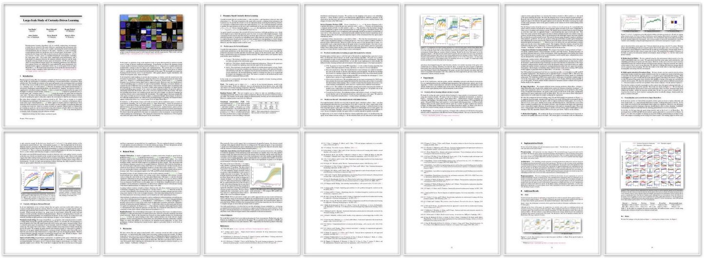

Self-Supervised Exploration via Disagreement
Efficient exploration is a long-standing problem in sensorimotor learning. Major advances have been demonstrated in noise-free, non-stochastic domains such as video games and simulation. However, most of these formulations either get stuck in environments with stochastic dynamics or are too inefficient to be scalable to real robotics setups. In this paper, we propose a formulation for exploration inspired by the work in active learning literature. Specifically, we train an ensemble of dynamics models and incentivize the agent to explore such that the disagreement of those ensembles is maximized. This allows the agent to learn skills by exploring in a self-supervised manner without any external reward. Notably, we further leverage the disagreement objective to optimize the agent's policy in a differentiable manner, without using reinforcement learning, which results in a sample-efficient exploration. We demonstrate the efficacy of this formulation across a variety of benchmark environments including stochastic-Atari, Mujoco and Unity. Finally, we implement our differentiable exploration on a real robot which learns to interact with objects completely from scratch.
Exploration via Disagreement
We propose intrinsic curiosity formulation to help agent exploration. Our disagreement based objective helps agent not get stuck in stochastic environments and the differentiable reformulation allows for an efficient gradient-based learning. A glimpse of our model is shown in figure below. For more details, refer to the paper.
Source Code and Environment
We have released the TensorFlow based implementation on the github page. Try our code!
Paper and Bibtex
|

[Paper]
[ArXiv]
|
|
Citation
Deepak Pathak, Dhiraj Gandhi, Abhinav Gupta. Self-Supervised Exploration via Disagreement
In ICML 2019.
[Bibtex]
|
|
|
|
@inproceedings{pathak19disagreement,
Author = {Pathak, Deepak and
Gandhi, Dhiraj and Gupta, Abhinav},
Title = {Self-Supervised Exploration
via Disagreement},
Booktitle = {ICML},
Year = {2019}
}
|
Previous Works
Pathak, Agrawal, Efros, Darrell. Curiosity-driven Exploration by Self-supervised Prediction.
In ICML 2017. [website]
|
Burda*, Edwards*, Pathak*, Storkey, Darrell, Efros. Large-Scale Study of Curiosity-Driven Learning.
In ICLR 2019. [website]
|
Acknowledgements
We would like to thank Ben Recht, Leon Bottou, Harri Edwards, Yuri Burda, Saurabh Gupta, Ke Li, Rob Fergus, and Yann Lecun for fruitful discussions and comments. Part of the work was performed when DP was interning at Facebook AI Research. DP is supported by the Facebook graduate fellowship.
|
{kind=link}